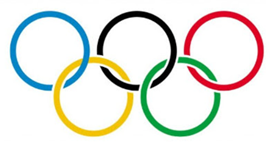

Jogos Olímpicos
|  |
|
O basquete é uma parte fundamental dos Jogos Olímpicos, sendo uma das modalidades esportivas mais populares e emocionantes do evento. As competições de basquete nas Olimpíadas reúnem os melhores jogadores do mundo, proporcionando aos fãs emocionantes jogos e momentos memoráveis. Os Jogos Olímpicos de basquete oferecem uma plataforma para atletas de todo o mundo competirem pelo ouro olímpico, destacando a importância do esporte e da cooperação global no cenário esportivo internacional. Equipes nacionais de basquete competem pelos medalhões de ouro, prata e bronze nas Olimpíadas de Verão. Os Jogos Olímpicos de basquete incluem torneios tanto para homens quanto para mulheres, com equipes de diversos países competindo em busca da glória olímpica. Os jogos de basquete nas Olimpíadas representam não apenas a excelência esportiva, mas também a celebração da diversidade e da unidade, reunindo nações de diferentes origens em torno de uma paixão compartilhada pelo esporte. Como parte essencial do programa olímpico, o basquete nas Olimpíadas continua a inspirar atletas e fãs de todo o mundo. |